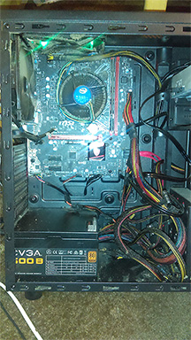
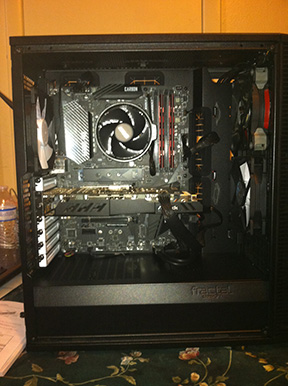
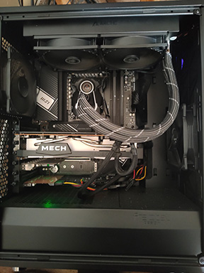

My Builds So Far
The First Build Ever
It was in 2016 when I had built my first PC and it was a Intel i5-6400, 6th gen Skylake, Quad-core cpu on an MSI H110M motherboard. I had a EVGA 500 B1 watt psu for power and a 27 inch Asus Monitor. Due to frying my motherboard the first time, I had to RMA the first board for another one. The case I got was a Thermaltake Versa H25. I also has a DVD/CDshh disc drive so I could burn CDs and watch DVDs. I didn't want to buy Netflix at the time and preferred physical media. It has 8 gigs of memory
As you can see from the picture, my cable management was just to stuff it in the free space that was available. Nasty looking ketchup and mustard wires with whatever case fans I could find cheaply. Not the best build but for my first time with little help, for my budget and for what I wanted, it was perfect.
I would end up giving this computer to my mother. It is still in use after all this time. Same hard drive and all.
The Upgrade
This is the second computer that I built back in 2019. This one was in the computer case that I had been wanting to build in for a long time, the Fractal Design Define C, the non-window version. This build had Ballistix Sport LT 16 gigs memory which was done by two 8 gig sticks at DDR4 3200. I had wanted to increase the memory another 16 gigs but by the time I had the money to get more memory, I was having problems finding the same memory that I already had installed.
The motherboard was a MSI product again. This time it was the Performance Gaming B450 Pro Carbon AC. At the time, this was the best budget AM4 board at the time for what was, again at the time, a new platform coming out for AMD, the Ryzen line. This was all powered by a EVGA 650 EG power supply. I then bought my a second monitor to make programming and watching videos at the same time easier. This time I added a gpu as the cpu did not have integrated graphics. The gpu that I had choosen was ASRock Radeon RX 580 8gb that is factory overclocked.
This computer I ended up giving to my nephew as well as buying him a monitor, a keyboard and a mouse as well as his own hard drive. Which by the way, at this point I am still using the hard drive that I took out from laptop and as you can see my cable management skills got better. Not really sure if that is because I have more space in the case or if it is because I had a build under my belt and learned from my former mistakes.
The Current Trend
This is my current pc and it should last me for a while or at least I will need to only upgrade the cpu to a X sku cpu for more performance if I really need it. This computer I built for school as my former computer didn't meet the minimum requirements for the classes that I am taking at the moment.
The cpu that is the brain of this build is another AMD cpu- a Ryzen 9 7900. I didn't get the 5900x because I really don't want to have to get all of the things needed for making sure the cpu is cooled after I overclocked plus I have never overclocked something and though I want to try, I don't want to mess up my pc with a dumb mistake. The 7900 is powerful enough for what I need it to do as well be able to be cooled with just a air cooler or a AIO(All in One) cooler with very little problem.
The motherboard for this computer is, once again, a MSI product: MSI PRO X670-P Wifi. I chose this motherboard over the more expensive boards because it gives me all of the things that more expensive boards give while maintaining a budget price. It is a really good board for the price and the features that you get like the 2.5g ethernet and such. Due to my classes having my using photoshop for the editing of picture for the websites that I will be building for class, I went with 32 gigabits of memory at 4800 speed.
Because this cpu pulls more watts from the wall and runs hotter then the previous generation, I didn't feel safe having using a air-cooled solution with it, so I decided to get a Arctic Freezer 2 cooler. I got the 240 radiator so that I could put it on the top of my case rather than put it on the front. Also, since I had promised my nephew that I would give him my old computer when I built me a new one, I couldn't just take the graphics card because then he would be without one, so I got the MSI RX 6700xt 12 gigabit. I like 1080p gaming, I don't really need 4k or anything else and this gpu is said to do 1080p just fine. The power supply that I got for powering this is the EVGA SuperNOVA 850 G5 and the case that I built this in is the Fractal Design Meshify C Black-Non Tempered Glass Verizon.